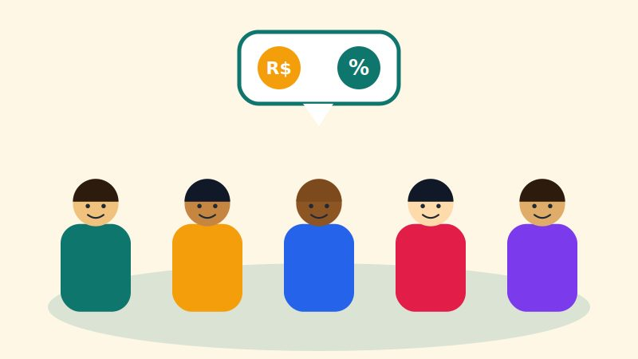
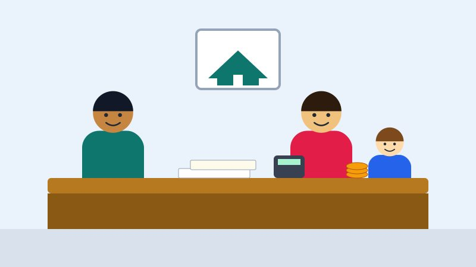

Primeiro Salário

Oficinas para jovens de 16 a 24 anos sobre salário, orçamento e uso responsável do crédito.
Cada projeto atende um público diferente e depende de voluntários e de doações para acontecer.

Oficinas para jovens de 16 a 24 anos sobre salário, orçamento e uso responsável do crédito.

Atendimento a famílias para organizar dívidas, montar reserva de emergência e planejar o mês.
Noções de fluxo de caixa para microempreendedores. As turmas abrem em 2027.
Você não precisa ser especialista em finanças. Basta ter algumas horas por mês.
As doações financeiras mantêm as oficinas gratuitas.
Queremos atender mil pessoas até . Toda contribuição, de qualquer valor, conta para a meta.
| Destino | Percentual |
|---|---|
| Materiais didáticos | 40% |
| Formação de voluntários | 25% |
| Transporte e alimentação | 20% |
| Administração | 15% |